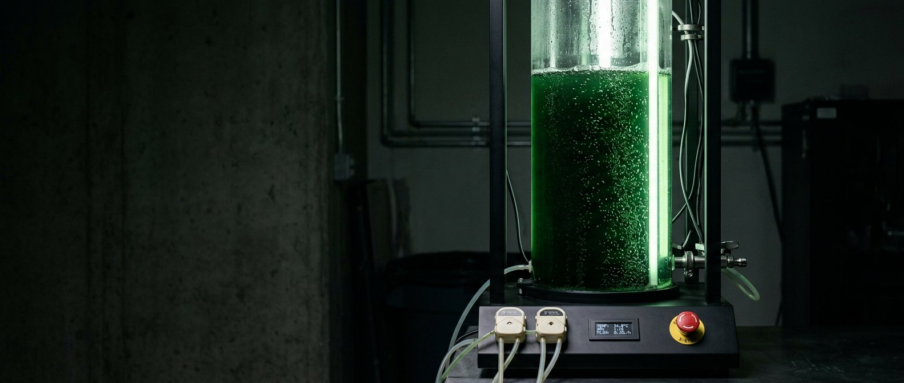
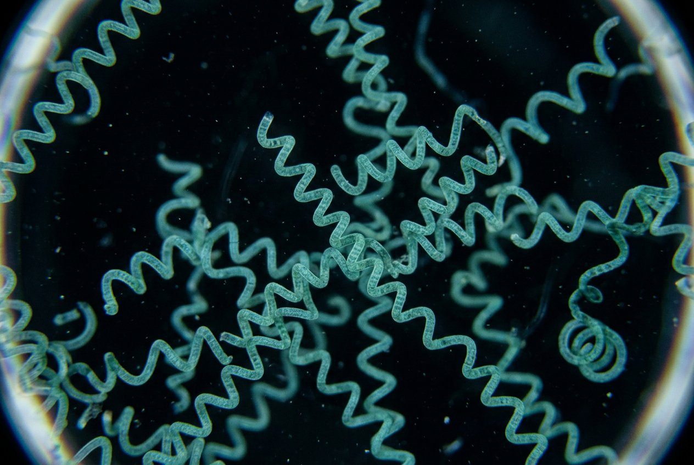
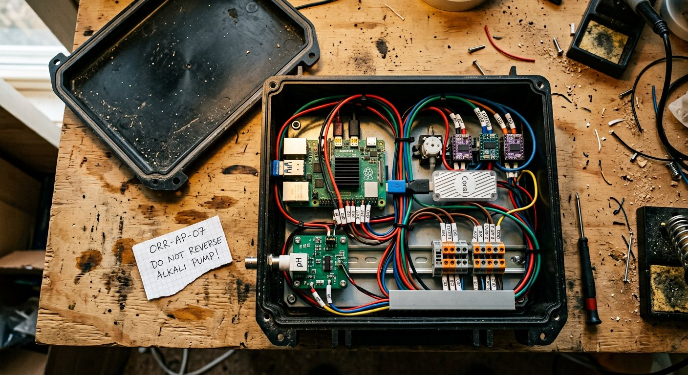
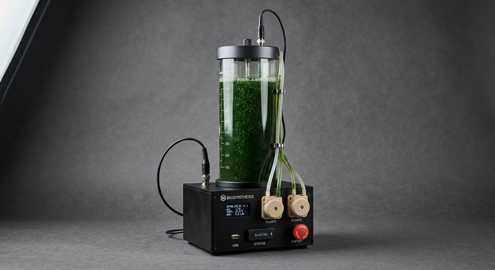

Full-stack biological infrastructure
A living production system that learns how to stay productive.
Vessel, sensors, edge vision, digital twin, control firmware and federated learning — engineered as one instrument for reliable microalgae cultivation.
Living simulation
Biology pushes back.
Change the environment. The model recalculates growth, oxygen stress and useful output. Brightest is not best. More is not always more.

Simulated response from a physics model (Monod · Steele · Beer-Lambert · oxygen inhibition) — not measured laboratory data.
One product, every layer
The whole loop is Algaephyte.
Algaephyte · operating essay
How the system works
A column of Arthrospira, six numbers, a small physics model, a vision stick that is not allowed to act, and a mesh that shares what it learned without sharing what it saw.
The loop, said slowly
Every few seconds the brick reads pH, temperature, wall irradiance, OD at 750 nm, dissolved oxygen and conductivity. Those six numbers update a digital twin whose state is biomass, internal nitrogen quota, and dissolved inorganic carbon. The twin is Droop for quota, Steele for light (including the photoinhibitory limb), Beer-Lambert for self-shading through radial shells, and a dissolved-oxygen inhibition term we added after watching afternoon plateaus we could not otherwise explain.
From the current state the twin is integrated seventy-two hours forward. A planner — rules when offline, a small proposing model when a link exists — suggests an action: dose bicarbonate, nudge nitrate, raise air, dim the jacket, do nothing. The suggestion is not an actuation.
Gate one is arithmetic: mass, duty, pH band, temperature ceiling, minimum seconds between doses. Gate two is the twin itself, run on the proposal as a counterfactual; if predicted μ falls or pH leaves the band, the proposal dies. Gate three is firmware on the ESP32 that owns the pump MOSFETs, with its own EEPROM clamps and a watchdog that opens the pumps if the Pi goes mute. The mushroom e-stop on the brick does not speak software.
What the TPU is for
Optical density is colour-blind. A healthy helix and a green contaminant can share an OD₇₅₀. A camera at a modest magnification, with YOLOv8n compiled INT8 to the Coral at 288 pixels, returns three classes we actually use: healthy helix, fragment, not-spirulina. Fragment fraction over a rolling hour is the stress plot. Not-spirulina climbing is the contamination plot. Neither plot can open a pump. Either plot can hold one, and can widen the twin's uncertainty so the planner becomes conservative.
Inference is ~20 ms at ~2 W. We do not need 50 fps. We need to notice a ciliate before it is a population, and we need the stick to keep doing that when the brick is warm.
What the mesh is for
One column is n = 1. Finding a strain's true I_opt by hand is a season. Forty columns sharing fitted parameters — not images, not traces — is a month. Algaephyte Mesh publishes a short vector on MQTT (QoS 1, retained): μ_max, I_opt, K_s, T_opt, Q_min. Subscribers bounds-check and finite-check before a value can touch a live twin. Last-will marks a node dead when the socket dies, which is how we stopped mistaking a crashed greenhouse culture for a flaky mast.

Bicarbonate dosing, by hand
If you are intervening because a probe lied or a pump was dry, do not dump the deficit. This is the same staging Algaephyte uses: 0.5 g/L per hour, never as a slug.
Cooking soda is fine. Do not use washing soda without knowing the conversion. Do not add acid to 'correct' a high pH while the pool is empty — restore the pool.
The sensor stack
Six signals, one culture.
Each channel tells a different biological story. The twin listens to all six at once, because no single number can describe a living culture.
The digital twin
Predicting growth with Droop and Steele
A physics-based model of nutrient quotas and light saturation lets Algaephyte forecast growth before it ever moves a pump.
Droop: the quota inside the cell
Droop's cell-quota kinetics decouple uptake from growth: cells store nitrogen, and division depends on that internal quota rather than the concentration in the medium. That single idea explains why a starved culture keeps dividing after you feed it, and why over-dosing nitrate buys you nothing but bacteria.
Steele: light has an optimum, then a cliff
Steele's curve handles light — growth rises to an optimum irradiance and falls again under photoinhibition. Brightest is not best: past the optimum, the outer shell of the culture bleaches, oxygen supersaturates, and photosynthesis starts to poison itself. The twin treats irradiance as a control surface, not a schedule.
Beer-Lambert: a dense culture is a stack of dark jackets
Beer-Lambert gives every radial shell of the vessel its own light climate, so the outer millimetre of a dense culture can be photoinhibited while the axis sits below compensation. A single wall sensor cannot see this. The twin can, because it integrates Steele's curve through the radial shells.
Alkalinity, not pH
Most growers chase pH because pH is the number a ten-dollar probe will give you. In an alkaline Arthrospira medium the bicarbonate/carbonate pool is simultaneously the inorganic carbon supply, the overnight buffer, and the reason almost nothing else can live in the vessel. pH is what that pool looks like from the outside. The twin treats dissolved inorganic carbon as a state variable, not a setpoint.
Dissolved oxygen: when photosynthesis poisons itself
As dissolved oxygen climbs through the afternoon, photosynthesis starts to supersaturate — the culture poisons itself. The first proposal is usually more air. The second is a modest dim. The third, if you have been stubborn about air, is a siesta. Oxygen stress is a state variable in the twin, not a footnote.
Bounded autonomy
Intelligence proposes. Hardware decides.
A pump that does nothing is almost always safer than a pump that does the wrong thing quickly. Especially the alkali pump. Algaephyte fails closed — three independent layers, plus a physical stop.
We once let a planner (a language model, to be specific, and we deserved what we got) propose "raise alkalinity to target" without a rate. The software gate caught the mass. If it had not, the firmware would have. If it had not, there is a red button on the front of the brick. The culture is expensive in time. The pump is cheap. We take the pump's side.
Algaephyte Mesh
Federated learning without sending a pixel
Mesh is not a cloud that owns your culture. It is a broker and a convention. Each node fits its digital twin to what it has seen — a handful of scalars — and may publish those scalars. Not the OD trace. Not the pH trace. Not the camera frames. Not the coordinates of the greenhouse.
algaephyte/{id}/twin — the parameter vector, retained.
algaephyte/{id}/health — a coarse status (ok, hold, human), not a dump.
algaephyte/strain/{name}/aggregate — optional, broker-side, still just parameters.
QoS 1. TLS if you have it. User/pass if you do not yet have TLS, which we do not pretend is the same thing. Payloads are short on purpose: a rural 4G stick should be able to move them during a storm.
Not training YOLO on-device — the Coral is inference-only. Federated in the twin: each node is a noisy experiment on μ_max and I_opt, and the mesh is a way for those experiments to average without a graduate student in the middle. If you want to keep your node private, do not subscribe, do not publish. Algaephyte does not require the broker. The broker is how a network of vessels gets wiser than a single vessel.
AP-04's air MOSFET died at 02:14. Without last-will, the dashboard showed a happy last packet from 01:51 and we called it a mast. With last-will, silence is a published fact. We still lost the culture. We did not lose the next one the same way.

Built as an instrument
Nothing critical lives in the cloud.
The Pi runs the twin. The Edge TPU reads the microscope. The ESP32 owns the wet-side actuators. Pull the network and cultivation continues. Pull the e-stop and the pumps do not.
Inspect the hardware stackScale without fantasy
One vessel is small. Reliability multiplies.
That is roughly 1.4 g of protein and 4.3 g of carbon dioxide fixed each day. Not a miracle. Ten thousand vessels that avoid the overnight crash become more than five tonnes of protein a year, produced where the vessels are installed. The honest range the literature reports for small photobioreactors — 0.10–0.16 g dry biomass per litre per day — is the range our own columns fall into when nothing is on fire.
Development record
The failures are part of the product.
Every clean run and every crash makes the cut. AP-02 is in the firmware comments.
When it goes wrong
Troubleshooting, from the field
Each fault below is one we have actually met — a probe that lied, a pump that was dry, a greenhouse that died at 2:14 a.m. The fixes are ordered the way we would do them.
Questions, answered plainly
FAQ
Pilot access · deployment inquiry
Deploy Algaephyte
Algaephyte is entering controlled pilot deployments across research, production and education. Tell us the environment, intended scale and organism goal. This opens a deployment inquiry to service@orrbiologicals.com.